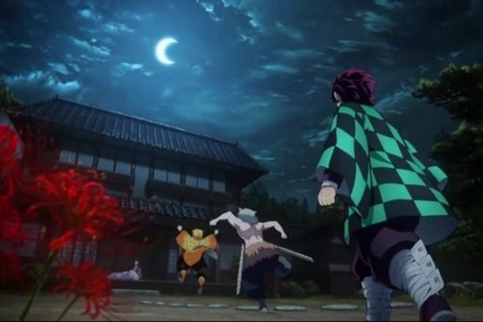
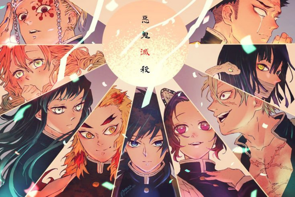
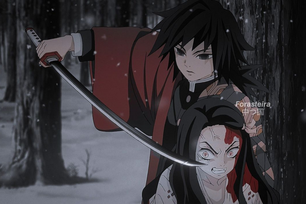

Kimetsu No Yaiba
Demon Slayer
By
ikhsan , 20 Desember 2022
Kimetsu no Yaiba 鬼滅の刃, terj. har. "Korps Pembasmi Iblis"[4]), yang diterbitkan di Indonesia dengan judul Demon Slayer: Kimetsu no Yaiba, adalah sebuah seri manga Jepang yang ditulis dan diilustrasikan oleh Koyoharu Gotōge. Manga ini diterbitkan dalam bahasa Inggris oleh Viz Media, sementara Shueisha merilisnya dalam bahasa Inggris dan Spanyol secara serentak dengan perilisannya di Jepang melalui platform Manga Plus milik mereka.
Manga ini diadaptasi menjadi sebuah seri anime yang diproduksi oleh Ufotable dan ditayangkan sejak bulan April hingga September 2019. Sekuel berupa film layar lebar diumumkan ketika episode terakhir disiarkan dan dijadwalkan untuk dirilis pada bulan Oktober 2020.
Per bulan Mei 2020, manga ini telah terjual sebanyak lebih dari 80 juta cetak dalam peredaran—termasuk versi digitalnya, dan membuatnya menjadi salah satu seri manga terlaris. Sementara itu, seri anime-nya telah menerima banyak penghargaan dan dianggap sebagai salah satu anime terbaik pada dekade 2010

Berlatar di Jepang pada zaman Taisho, Tanjiro Kamado adalah seorang bocah lelaki baik hati dan cerdas yang tinggal bersama keluarganya dan mencari uang dengan cara menjual arang. Semuanya berubah ketika keluarganya diserang dan dibantai oleh iblis (oni). Tanjiro dan saudarinya Nezuko adalah satu-satunya yang selamat dari insiden tersebut, meskipun Nezuko sekarang telah berubah menjadi iblis—tetapi secara mengejutkan dia masih menunjukkan tanda-tanda emosi dan pemikiran layaknya seorang manusia. Tanjiro kemudian menjadi pembasmi iblis untuk mengembalikan Nezuko menjadi manusia lagi, dan untuk mencegah tragedi yang terjadi pada dia dan adiknya terulang pada orang lain



鬼滅の刃
Demon Slayer: Kimetsu no Yaiba, adalah sebuah seri manga Jepang yang ditulis dan diilustrasikan oleh Koyoharu Gotōge. Manga ini diterbitkan dalam bahasa Inggris oleh Viz Media, sementara Shueisha merilisnya dalam bahasa Inggris dan Spanyol secara serentak dengan perilisannya di Jepang melalui platform Manga Plus milik mereka.
Tokoh Utama